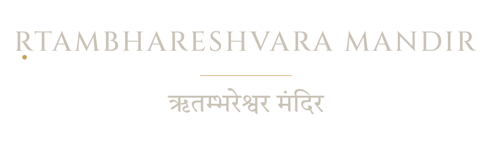

The Lord who sustains the order of the cosmos is the Lord who dwells in your heart — and He is beyond both. A Shiva temple and foundation built on one idea: Ṛta, the order that holds.
The Shivalinga stands in a two-tiered lotus jalādhārī on a water podium ringed by twelve solar medallions. Stand before it, above it, or within it — each view is a complete philosophy.
Twenty-four lotus petals — the twenty-four tattvas of Prakṛti — hold the linga at their centre: Puruṣa, consciousness itself, seated in the midst of all that becomes.
Read the Sāṅkhya reading →Twelve petals and twelve suns form the Ṛta-chakra — the wheel of cosmic order, months and Ādityas — with the Lord at the hub, bearing the cycle that bears us.
Read the Ṛta reading →The same twelve-petal lotus is the Anāhata, the heart chakra — the Lord dwelling in the human heart. Zoom all the way in, and only He remains.
Read the heart reading →
Ṛtambhareśvara — the Lord who bears Ṛta. The mandir rises around the murti itself: water, lotus, stone, and the twelve suns, built to be read as it is worshipped.
Every lamp, every abhisheka, every stone of the mandir is carried by seva. Give once, or bear a ritual through the year.